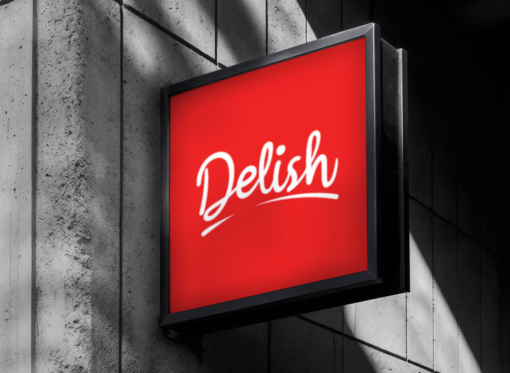
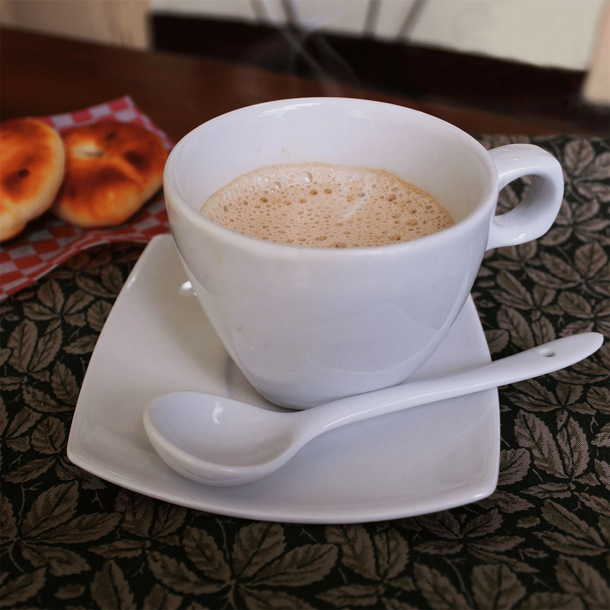
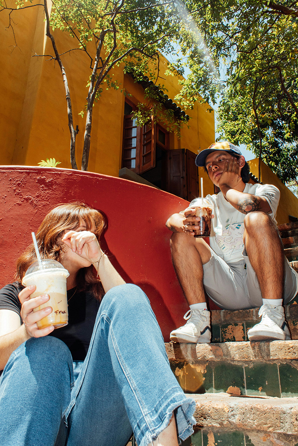
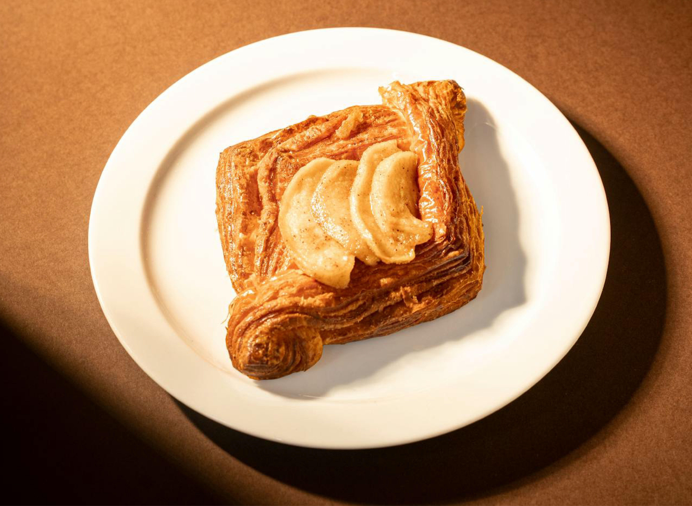
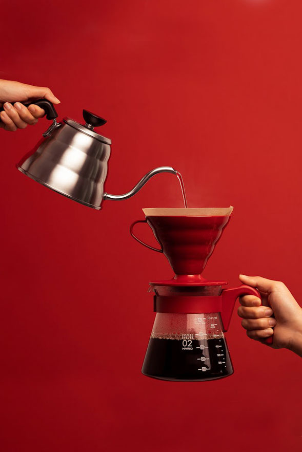
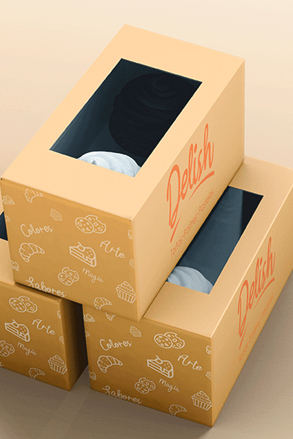
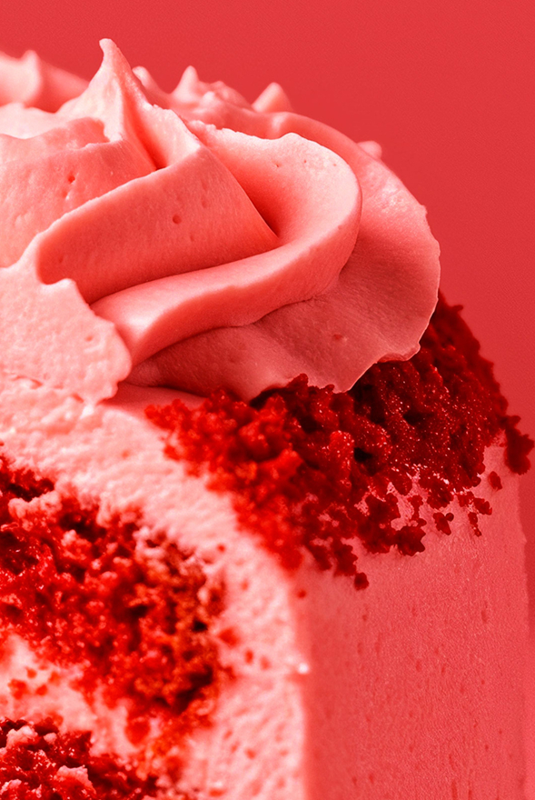

Industria
Pastelería
Lo que hicimos
Identidad y escosistema gráfico
El proyecto de identidad para Delish, una pastelería de tradición familiar en Fredonia, se centró en la creación de un ecosistema gráfico que lograra equilibrar el legado artesanal con una estética contemporánea y competitiva. La solución visual parte de un logotipo construido sobre una tipografía cursiva de trazos fluidos, cuyas ondulaciones orgánicas funcionan como una metáfora visual de la suavidad y el dulzor de la repostería tradicional.
Para asegurar la coherencia comunicacional en todos los puntos de contacto, se desarrolló un manual de marca integral que normaliza los estándares visuales de la compañía. El resultado es una imagen de marca sólida y escalable que protege la esencia de la receta tradicional de Delish, dotándola de las herramientas gráficas necesarias para su expansión y posicionamiento en el sector gastronómico regional.





